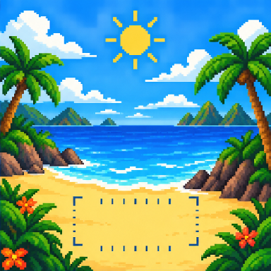
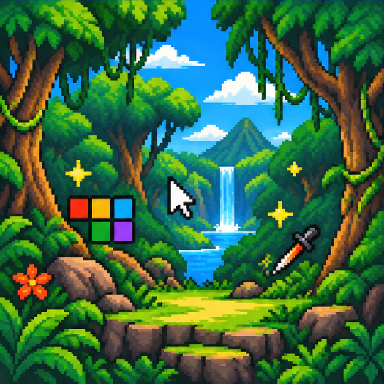
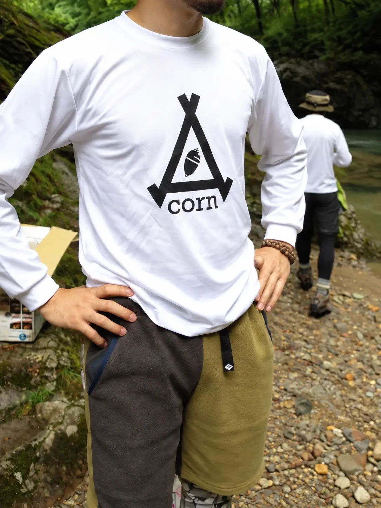
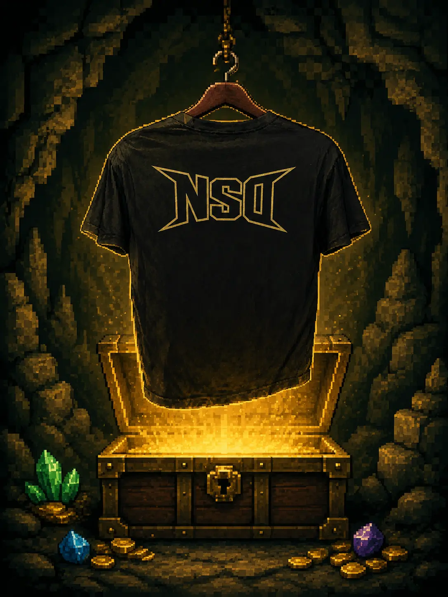
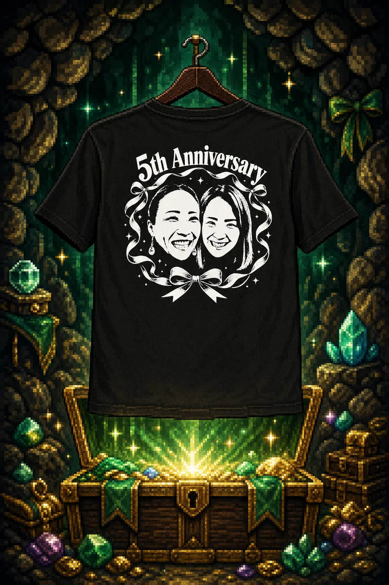
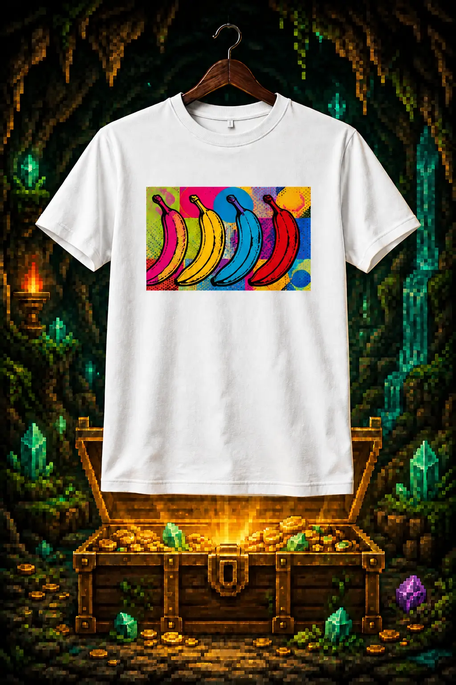

記事を72％まで読み進めるとCLEAR！
SCORE
008500COIN × 01WORLD
1-1LIFE ♥♥♥
008500COIN × 01WORLD
1-1LIFE ♥♥♥
島のプリントは
まかせて！
まかせて！
一緒に冒険
しよう！
しよう！


ISLAND MASTERハダオジ店長
ADVENTURERゆう
▼ SCROLL
FIRST ANSWER
オリジナルTシャツは
データなしでも1枚から相談できます
スマホ画像、手描きラフ、Canvaデータから進めるための入口店長「デザインソフトがない」「画像が小さい」「1枚だけなので頼みにくい」そんな状態でも、まずは相談できます。ハダオジプリントでは、届いた画像の解像度、プリントしたい大きさ、Tシャツの色、用途を見ながら、DTF・シルクスクリーン・データ修正のどれが合うかを整理します。
検索で知りたい答えを先に言うと、1枚だけなら製版代のかからないDTFプリントが選びやすく、スマホ画像や手描きラフでも、サイズ調整・背景透過・描き直しで使える可能性があります。無理な場合も「できません」で終わらせず、プリントサイズを小さくする、線を太くする、ロゴを作り直すなどの代替案を一緒に考えます。
Tシャツプリントで困った人の
駆け込み寺へ
データがない、方法が分からない、希望の位置が難しい。そんなときに条件を一緒に整理し、現場でプリントできる形へ近づけます。スマホ画像、手描き、Canva、AI画像など、まずは今ある材料から確認します。
共に見つける。共に創る。 運営者と編集方針を見る ▶
ARTICLE QUEST / HOW TO PLAY
攻略記事を読んで
攻略記事を読んで
PRINT MASTERを目指せ！
記事を読み進めると宝箱が開き、コインとプリントの知識を獲得。全記事CLEARで限定称号が手に入ります。
読んだ記事の数だけ冒険の記録がたまる。
すべての攻略記事を読むと限定称号を獲得！
FREE ESTIMATE / NEW QUESTデータがなくても、
データがなくても、
相談からスタートできます
スマホの写真や手描きラフだけでも大丈夫。分からない項目は空欄のまま相談できます。
WORLD 1-1
冒険のはじまり
失敗しないTシャツづくりの基本装備ISLAND MAP
冒険する島を選ぶ
知りたいテーマの島を選んで攻略しようステージ内の記事をすべてCLEARすると限定財宝を獲得。4つ集めて「TREASURE HUNTER」を目指そう！
プリント火山島
シルクスクリーンとDTFの違いを、枚数・色・用途で比較。
方法と料金へ ▶
サイズの砂浜
胸・背中・袖の見え方と適正サイズ。
サイズ攻略へ ▶
デザインの森
CanvaやAI画像をプリントデータにするコツ。
デザイン攻略へ ▶ボディの山
定番Tシャツとドライ素材の違い。
ボディ選びへ ▶PRINT GEAR GALLERY
制作事例
制作事例とイメージサンプルのプリント仕様
CASE FILE 005 / 20 PIECESアウトドアサークルの
アウトドアサークルの
ドライ長袖Tシャツ
- 位置
- 前面中央・1か所
- ウェア
- ドライ長袖Tシャツ
- 参考価格
- 31,240円（税込・送料別）

CASE FILE 001 / 50 PIECES特色ゴールドの
特色ゴールドの
シルクスクリーンTシャツ
- 位置
- 左胸／背中
- ウェア
- 綿Tシャツ
- 加工
- シルクスクリーン

CASE FILE 002 / 2 PIECES5周年記念の
5周年記念の
プレゼントTシャツ
- 用途
- 記念プレゼント
- ウェア
- 綿Tシャツ
- 加工
- DTF転写プリント

SAMPLE CASE 003 / 20 PIECES飲食店の
飲食店の
スタッフTシャツ
- 用途
- スタッフウェア
- ウェア
- 白・綿Tシャツ
- 加工
- フルカラーDTF
NEW MISSIONS
新着記事
現場の経験から、分かりやすく解説Canva・作成サイズ
▶CanvaでTシャツデザインを作るサイズ設定
ボディサイズ
▶Tシャツサイズ表の見方｜身幅・身丈・着丈を比較
クラスT・手書き
▶クラスTシャツは手書きの絵から作れる？
データ復元
▶データがない昔のTシャツを写真から復元できる？
特殊な位置
▶袖・襟下・肩にもプリントできる？
画像データ
▶デザイン画像とプリントデータの違い
イベント・プレゼント
▶少ない枚数のお揃いTシャツは作れる？
失敗回避
▶Tシャツプリントの失敗例10選
はじめての方へ
▶オリジナルTシャツは1枚から作れる？
プリント方法
▶シルクスクリーンとDTF、どちらを選ぶ？
料金の目安
▶オリジナルTシャツ30枚の料金はいくら？
サイズと位置
▶Tシャツのプリントサイズと位置の決め方
Canva入稿
▶CanvaのデザインをTシャツにするまで
ボディ比較
▶00085-CVTと00300-ACTの違い
画像データ
▶低解像度の画像でもTシャツにプリントできる？
部活・イベント
▶部活・学園祭Tシャツを注文するときの注意点
ブランド入門
▶自分のアパレルブランドを始める手順
AI画像
▶AIで作った画像はTシャツにプリントできる？
YUU'S HINT
難しい言葉は使わず、初心者の私にも分かるように質問していきます！